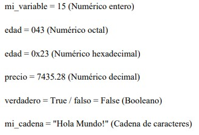
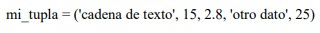
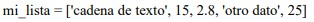

OBJETIVO: Reconocer escenarios básicos y representarlos en pseudocódigos, desarrollando habilidades en el lenguaje de programación en Python de manera justificada y comprensible.
✖
DESCRIPCIÓN DEL VIDEO
Este video ofrece una visión detallada sobre cómo mejorar tus habilidades de comunicación y empleabilidad a través de diversas masterclasses. Aprenderás de expertos en el campo y podrás aplicar estas habilidades en tu vida profesional y personal.
No te pierdas esta oportunidad de crecimiento personal y profesional. Inscríbete en nuestras masterclasses y comienza a mejorar tus competencias hoy mismo.
Unidades:
Unidad 1:
1.1 Análisis Algorítmico
1.2 Lenguaje de programación
1.3 Tipos de datos
1.4 Lectura por teclado
1.1 Análisis Algorítmico:
El análisis del algoritmo es el proceso de analizar la capacidad de resolución de problemas del algoritmo en términos del tiempo y el tamaño requeridos (el tamaño de la memoria para el almacenamiento durante la implementación). Sin embargo, la principal preocupación del análisis de algoritmos es el tiempo o rendimiento requerido. El análisis algorítmico consiste en enseñar las bases de la programación y las herramientas básicas con las que se debe aprender a interpretar ejercicios mediante algoritmos y flujogramas.
La necesidad de analizar algoritmos surge como necesidad de eficiencia, es decir elegir un mejor algoritmo para un problema particular, ya que un problema computacional puede resolverse mediante diferentes algoritmos.
Al considerar un algoritmo para un problema específico, podemos comenzar a desarrollar el reconocimiento de patrones de modo que la ayuda de este algoritmo pueda resolver tipos similares de problemas. Los algoritmos a menudo son bastante diferentes entre sí, aunque el objetivo de estos algoritmos es el mismo. Por ejemplo, sabemos que un conjunto de números se puede ordenar usando diferentes algoritmos. El número de comparaciones realizadas por un algoritmo puede variar con otros para la misma entrada. Por lo tanto, la complejidad temporal de estos algoritmos puede diferir. Al mismo tiempo, necesitamos calcular el espacio de memoria requerido por cada algoritmo.
En general, realizamos los siguientes tipos de análisis:
● El peor de los casos: el número máximo de pasos dados en cualquier instancia de tamaño N.
● El mejor caso: el número mínimo de pasos dados en cualquier instancia de tamaño N.
● El caso promedio: un número promedio de pasos dados en cualquier instancia de tamaño N.
● El amortizado: una secuencia de operaciones aplicadas a la entrada de tamaño promedio en el tiempo.
1.2 Python como lenguaje de programación
La historia del lenguaje de programación Python se remonta hacia finales de los 80s y principio de los 90s, su implementación comenzó en diciembre de 1991. Dentro de los lenguajes informáticos Python, pertenece al grupo de los lenguajes de programación y puede ser clasificado como un lenguaje interpretado, de alto nivel, multiplataforma, de tipado dinámico y multiparadigma. A diferencia de la mayoría de los lenguajes de programación, Python nos provee de reglas de estilos, a fin de poder escribir código fuente más legible y de manera estandarizada. Estas reglas de estilo son definidas a través de la Python Enhancement Proposal No 8 (PEP 8).
Un lenguaje informático es un idioma artificial, utilizado por ordenadores, cuyo fin es transmitir información de algo a alguien. Los lenguajes informáticos pueden clasificarse en:
● Lenguajes de programación (Python, PHP, Perl, C, etc.).
● Lenguajes de especificación (UML).
● Lenguajes de consulta (SQL).
● Lenguajes de marcas (HTML, XML).
● Lenguajes de transformación (XSLT).
● Protocolos de comunicaciones (HTTP, FTP).
1.3 Tipos de datos
En Python, todo se considera un objeto, por lo cual los tipos de datos serían las clases que definen las características y propiedades. Las variables definidas en nuestro código serían las instancias del tipo de dato que le hayamos asignado a cada una de ellas.
Los tipos de datos básicos de Python son los booleanos, los numéricos (enteros, punto flotante y complejos) y las cadenas de caracteres. Ejemplo:

Python posee además de los tipos ya vistos, 3 tipos más complejos, que admiten una colección de datos. Estos tipos son:
• Tuplas
• Listas
• Diccionarios
Estos tres tipos pueden almacenar colecciones de datos de diversos tipos y se diferencian por su sintaxis y por la forma en la cual los datos pueden ser manipulados. Tuplas
Una tupla es una variable que permite almacenar varios datos inmutables (no pueden ser modificados una vez creados). Ejemplo:
 Listas
Una lista es similar a una tupla con la diferencia fundamental de que permite modificar los datos una vez creados. Ejemplo:
 Diccionarios
Los diccionarios permiten utilizar una clave para declarar y acceder a un valor. Ejemplo:
1.4 Lectura por teclado
La función input() permite obtener texto escrito por teclado. Al llegar a la función, el programa se detiene esperando que se escriba algo y se pulse la tecla Intro.
El uso de la lectura de datos por teclado es uno de los recursos muy útiles a la hora de crear o desarrollar una aplicación en Python, pues mediante esta sentencia el programa deberá guiar o pedir la información necesaria al usuario para el desarrollo de la misma.
Además, esta función puede ser asignada a una variable y sus valores podrán ser transformados al tipo de dato que se necesite para dicha operación. Ejemplo: